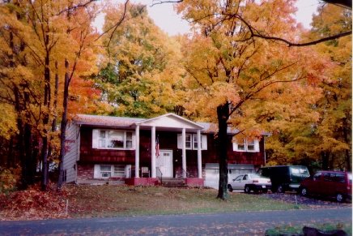

私の家・秋 (96.11)
風景

|
本当は１０月に出したかったのですが、すっかり忘れていました(^^ゞ。冬と初夏に続いて秋の風景です。 ニューヨーク州の紅葉は、東京より遅く１１月の初めくらいが一番きれいです。でも、日本に比べると今一つインパクトが少ない感じです。それはどうも日本のもみじがないからのようです。オレンジと黄色はありますが、あの、鮮やかな赤は米国東海岸にはありません。 |

=私の家(96.11)=
|
日本のもみじは英語で、Japanese Maplesと言います。日本に行ったことのあるアメリカ人が言いました。”真っ赤なもみじは印象的だった”。ベビーシッター先のお母さん、Teddy はこの夏、庭にガーデンを作り、この Japanese Maples を植えていました。 それでも木がたくさんある私の町の紅葉は、木々の一本一本がまっすぐに大きく伸びていて壮大で美しいものです。 私の家・冬（風景）と私の家・初夏（風景）も合わせてご覧ください。季節の変化がわかるでしょう？ |
[ホームへ] [写真一覧へ]